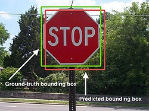
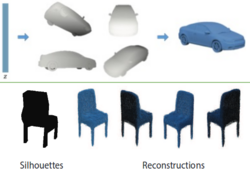
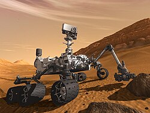
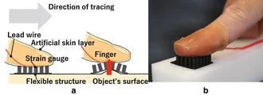
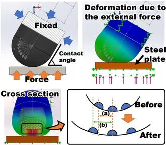

Computer vision
| Part of a series on |
| Artificial intelligence (AI) |
|---|
| Glossary |
Computer vision tasks include methods for acquiring, processing, analyzing, and understanding digital images, and extraction of high-dimensional data from the real world in order to produce numerical or symbolic information, e.g. in the form of decisions.[1][2][3][4] "Understanding" in this context signifies the transformation of visual images into descriptions of the world that make sense to thought processes and can elicit appropriate action. This image understanding can be seen as the disentangling of symbolic information from image data using models constructed with the aid of geometry, physics, statistics, and learning theory.
The scientific discipline of computer vision is concerned with the theory behind artificial systems that extract information from images. Image data can take many forms, such as video sequences, views from multiple cameras, multi-dimensional data from a 3D scanner, 3D point clouds from LiDaR sensors, or medical scanning devices. The technological discipline of computer vision seeks to apply its theories and models to the construction of computer vision systems.
Subdisciplines of computer vision include scene reconstruction, object detection, event detection, activity recognition, video tracking, object recognition, 3D pose estimation, learning, indexing, motion estimation, visual servoing, 3D scene modeling, and image restoration.
Definition
[edit]Computer vision is an interdisciplinary field that deals with how computers can be made to gain high-level understanding from digital images or videos. From the perspective of engineering, it seeks to automate tasks that the human visual system can do.[5][6][7] "Computer vision is concerned with the automatic extraction, analysis, and understanding of useful information from a single image or a sequence of images. It involves the development of a theoretical and algorithmic basis to achieve automatic visual understanding."[8] As a scientific discipline, computer vision is concerned with the theory behind artificial systems that extract information from images. The image data can take many forms, such as video sequences, views from multiple cameras, or multi-dimensional data from a medical scanner.[9] As a technological discipline, computer vision seeks to apply its theories and models for the construction of computer vision systems. Machine vision refers to a systems engineering discipline, especially in the context of factory automation. In more recent times, the terms computer vision and machine vision have converged to a greater degree.[10]: 13
History
[edit]In the late 1960s, computer vision began at universities that were pioneering artificial intelligence. It was meant to mimic the human visual system as a stepping stone to endowing robots with intelligent behavior.[11] In 1966, it was believed that this could be achieved through an undergraduate summer project,[12] by attaching a camera to a computer and having it "describe what it saw".[13][14]
What distinguished computer vision from the prevalent field of digital image processing at that time was a desire to extract three-dimensional structure from images with the goal of achieving full scene understanding. Studies in the 1970s formed the early foundations for many of the computer vision algorithms that exist today, including extraction of edges from images, labeling of lines, non-polyhedral and polyhedral modeling, representation of objects as interconnections of smaller structures, optical flow, and motion estimation.[11]
The next decade saw studies based on more rigorous mathematical analysis and quantitative aspects of computer vision. These include the concept of scale-space, the inference of shape from various cues such as shading, texture and focus, and contour models known as snakes. Researchers also realized that many of these mathematical concepts could be treated within the same optimization framework as regularization and Markov random fields.[15] By the 1990s, some of the previous research topics became more active than others. Research in projective 3-D reconstructions led to better understanding of camera calibration. With the advent of optimization methods for camera calibration, it was realized that a lot of the ideas were already explored in bundle adjustment theory from the field of photogrammetry. This led to methods for sparse 3-D reconstructions of scenes from multiple images. Progress was made on the dense stereo correspondence problem and further multi-view stereo techniques. At the same time, variations of graph cut were used to solve image segmentation. This decade also marked the first time statistical learning techniques were used in practice to recognize faces in images (see Eigenface). Toward the end of the 1990s, a significant change came about with the increased interaction between the fields of computer graphics and computer vision. This included image-based rendering, image morphing, view interpolation, panoramic image stitching and early light-field rendering.[11]
Recent work has seen the resurgence of feature-based methods used in conjunction with machine learning techniques and complex optimization frameworks.[16][17] The advancement of Deep Learning techniques has brought further life to the field of computer vision. The accuracy of deep learning algorithms on several benchmark computer vision data sets for tasks ranging from classification,[18] segmentation and optical flow has surpassed prior methods.[19][20]
Related fields
[edit]
Solid-state physics
[edit]Solid-state physics is another field that is closely related to computer vision. Most computer vision systems rely on image sensors, which detect electromagnetic radiation, which is typically in the form of either visible, infrared or ultraviolet light. The sensors are designed using quantum physics. The process by which light interacts with surfaces is explained using physics. Physics explains the behavior of optics which are a core part of most imaging systems. Sophisticated image sensors even require quantum mechanics to provide a complete understanding of the image formation process.[11] Also, various measurement problems in physics can be addressed using computer vision, for example, motion in fluids.
Neurobiology
[edit]Neurobiology has greatly influenced the development of computer vision algorithms. Over the last century, there has been an extensive study of eyes, neurons, and brain structures devoted to the processing of visual stimuli in both humans and various animals. This has led to a coarse yet convoluted description of how natural vision systems operate in order to solve certain vision-related tasks. These results have led to a sub-field within computer vision where artificial systems are designed to mimic the processing and behavior of biological systems at different levels of complexity. Also, some of the learning-based methods developed within computer vision (e.g. neural net and deep learning based image and feature analysis and classification) have their background in neurobiology. The Neocognitron, a neural network developed in the 1970s by Kunihiko Fukushima, is an early example of computer vision taking direct inspiration from neurobiology, specifically the primary visual cortex, serving as a foundational architectural precursor to modern convolutional neural networks (CNNs).[21]
Some strands of computer vision research are closely related to the study of biological vision—indeed, just as many strands of AI research are closely tied with research into human intelligence and the use of stored knowledge to interpret, integrate, and utilize visual information. The field of biological vision studies and models the physiological processes behind visual perception in humans and other animals. Computer vision, on the other hand, develops and describes the algorithms implemented in software and hardware behind artificial vision systems. An interdisciplinary exchange between biological and computer vision has proven fruitful for both fields.[22]
 Simplified example of training a neural network in object detection: The network is trained by multiple images known to depict starfish and sea urchins, which are correlated with "nodes" representing visual features. Starfish match with a ringed texture and star outline, whereas most sea urchins match with a striped texture and oval shape.
Simplified example of training a neural network in object detection: The network is trained by multiple images known to depict starfish and sea urchins, which are correlated with "nodes" representing visual features. Starfish match with a ringed texture and star outline, whereas most sea urchins match with a striped texture and oval shape.- The resulting model contains weighted associations between visual features and output categories. Because one training image depicts a ring-textured sea urchin, the model also develops a weak association between ringed texture and sea urchin.
 Subsequent run of the model on an input image (left):[23] The network correctly detects the starfish. However, the weak association between ringed texture and sea urchin also gives a weak signal to the latter from one of two intermediate nodes. In addition, a shell not included in the training gives a weak signal for the oval shape, also resulting in a weak signal for the sea urchin output. These weak signals may result in a false positive result for sea urchin.
Subsequent run of the model on an input image (left):[23] The network correctly detects the starfish. However, the weak association between ringed texture and sea urchin also gives a weak signal to the latter from one of two intermediate nodes. In addition, a shell not included in the training gives a weak signal for the oval shape, also resulting in a weak signal for the sea urchin output. These weak signals may result in a false positive result for sea urchin.


Signal processing
[edit]Yet another field related to computer vision is signal processing. Many methods for processing one-variable signals, typically temporal signals, can be extended in a natural way to the processing of two-variable signals or multi-variable signals in computer vision. However, because of the specific nature of images, there are many methods developed within computer vision that have no counterpart in the processing of one-variable signals. Together with the multi-dimensionality of the signal, this defines a subfield in signal processing as a part of computer vision.
Robotic navigation
[edit]Robot navigation sometimes deals with autonomous path planning or deliberation for robotic systems to navigate through an environment.[24] A detailed understanding of these environments is required to navigate through them. Information about the environment could be provided by a computer vision system, acting as a vision sensor and providing high-level information about the environment and the robot
Visual computing
[edit]Visual computing is a generic term for all computer science disciplines dealing with images and 3D models, such as computer graphics, image processing, visualization, computer vision, virtual and augmented reality, video processing, and computational visualistics. Visual computing also includes aspects of pattern recognition, human computer interaction, machine learning and digital libraries. The core challenges are the acquisition, processing, analysis and rendering of visual information (mainly images and video). Application areas include industrial quality control, medical image processing and visualization, surveying, robotics, multimedia systems, virtual heritage, special effects in movies and television, and ludology. Visual computing also includes digital art and digital media studies.
Other fields
[edit]Besides the above-mentioned views on computer vision, many of the related research topics can also be studied from a purely mathematical point of view. For example, many methods in computer vision are based on statistics, optimization or geometry. Finally, a significant part of the field is devoted to the implementation aspect of computer vision; how existing methods can be realized in various combinations of software and hardware, or how these methods can be modified in order to gain processing speed without losing too much performance. Computer vision is also used in fashion eCommerce, inventory management, patent search, furniture, and the beauty industry.[25]
Distinctions
[edit]The fields most closely related to computer vision are image processing, image analysis and machine vision. There is a significant overlap in the range of techniques and applications that these cover. This implies that the basic techniques that are used and developed in these fields are similar, something which can be interpreted as there is only one field with different names. On the other hand, it appears to be necessary for research groups, scientific journals, conferences, and companies to present or market themselves as belonging specifically to one of these fields and, hence, various characterizations which distinguish each of the fields from the others have been presented. In image processing, the input and output are both images, whereas in computer vision, the input is an image or video, and the output could be an enhanced image, an analysis of the image's content, or even a system's behavior based on that analysis.
Computer graphics produces image data from 3D models, and computer vision often produces 3D models from image data.[26] There is also a trend towards a combination of the two disciplines, e.g., as explored in augmented reality.
The following characterizations appear relevant but should not be taken as universally accepted:
- Image processing and image analysis tend to focus on 2D images, how to transform one image to another, e.g., by pixel-wise operations such as contrast enhancement, local operations such as edge extraction or noise removal, or geometrical transformations such as rotating the image. This characterization implies that image processing/analysis neither requires assumptions nor produces interpretations about the image content.
- Computer vision includes 3D analysis from 2D images. This analyzes the 3D scene projected onto one or several images, e.g., how to reconstruct structure or other information about the 3D scene from one or several images. Computer vision often relies on more or less complex assumptions about the scene depicted in an image.
- Machine vision is the process of applying a range of technologies and methods to provide imaging-based automatic inspection, process control, and robot guidance[27] in industrial applications.[22] Machine vision tends to focus on applications, mainly in manufacturing, e.g., vision-based robots and systems for vision-based inspection, measurement, or picking (such as bin picking[28]). This implies that image sensor technologies and control theory often are integrated with the processing of image data to control a robot and that real-time processing is emphasized by means of efficient implementations in hardware and software. It also implies that external conditions such as lighting can be and are often more controlled in machine vision than they are in general computer vision, which can enable the use of different algorithms.
- There is also a field called imaging which primarily focuses on the process of producing images, but sometimes also deals with the processing and analysis of images. For example, medical imaging includes substantial work on the analysis of image data in medical applications. Progress in convolutional neural networks (CNNs) has improved the accurate detection of disease in medical images, particularly in cardiology, pathology, dermatology, and radiology.[29]
- Finally, pattern recognition is a field that uses various methods to extract information from signals in general, mainly based on statistical approaches and artificial neural networks.[30] A significant part of this field is devoted to applying these methods to image data.
Photogrammetry also overlaps with computer vision, e.g., stereophotogrammetry vs. computer stereo vision.
Applications
[edit]Applications range from tasks such as industrial machine vision systems which, say, inspect bottles speeding by on a production line, to research into artificial intelligence and computers or robots that can comprehend the world around them. The computer vision and machine vision fields have significant overlap. Computer vision covers the core technology of automated image analysis which is used in many fields. Machine vision usually refers to a process of combining automated image analysis with other methods and technologies to provide automated inspection and robot guidance in industrial applications. In many computer-vision applications, computers are pre-programmed to solve a particular task, but methods based on learning are now becoming increasingly common. Examples of applications of computer vision include systems for:


- Automatic inspection, e.g., in manufacturing applications;
- Assisting humans in identification tasks, e.g., a species identification system;[31]
- Controlling processes, e.g., an industrial robot;
- Detecting events, e.g., for visual surveillance or people counting, e.g., in the restaurant industry;
- Interaction, e.g., as the input to a device for computer-human interaction;
- MediaPipe, an open-source framework from Google for AI edge device computing, e.g., face detection, image classification, object detection;
- monitoring agricultural crops, e.g. an open-source vision transformers model[32] has been developed to help farmers automatically detect strawberry diseases with 98.4% accuracy.[33]
- Modeling objects or environments, e.g., medical image analysis or topographical modeling;
- Navigation, e.g., by an autonomous vehicle or mobile robot;
- Organizing information, e.g., for indexing databases of images and image sequences.
- Tracking surfaces or planes in 3D coordinates for allowing Augmented Reality experiences.
- Analyzing the condition of facilities in industry or construction.
- Automatic real-time lip-reading for devices and apps to assist people with disabilities.[34]
For 2024, the leading areas of computer vision were industry (market size US$5.22 billion),[35] medicine (market size US$2.6 billion),[36] military (market size US$996.2 million).[37]
Medicine
[edit]One of the most prominent application fields is medical computer vision, or medical image processing, characterized by the extraction of information from image data to diagnose a patient.[38] An example of this is the detection of tumours, arteriosclerosis or other malign changes, and a variety of dental pathologies; measurements of organ dimensions, blood flow, etc. are another example. It also supports medical research by providing new information: e.g., about the structure of the brain or the quality of medical treatments. Applications of computer vision in the medical area also include enhancement of images interpreted by humans—ultrasonic images or X-ray images, for example—to reduce the influence of noise.
Machine vision
[edit]A second application area in computer vision is in industry, sometimes called machine vision, where information is extracted for the purpose of supporting a production process. One example is quality control where details or final products are being automatically inspected in order to find defects. One of the most prevalent fields for such inspecti is the Wafer industry in which every single Wafer is being measured and inspected for inaccuracies or defects to prevent a computer chip from coming to market in an unusable manner. Another example is a measurement of the position and orientation of details to be picked up by a robot arm. Machine vision is also heavily used in the agricultural processes to remove undesirable foodstuff from bulk material, a process called optical sorting.[39]
Military
[edit]The obvious examples are the detection of enemy soldiers or vehicles and missile guidance. More advanced systems for missile guidance send the missile to an area rather than a specific target, and target selection is made when the missile reaches the area based on locally acquired image data. Modern military concepts, such as "battlefield awareness", imply that various sensors, including image sensors, provide a rich set of information about a combat scene that can be used to support strategic decisions. In this case, automatic processing of the data is used to reduce complexity and to fuse information from multiple sensors to increase reliability.
Autonomous vehicles
[edit]

One of the newer application areas is autonomous vehicles, which include submersibles, land-based vehicles (small robots with wheels, cars, or trucks), aerial vehicles, and unmanned aerial vehicles (UAV). The level of autonomy ranges from fully autonomous (unmanned) vehicles to vehicles where computer-vision-based systems support a driver or a pilot in various situations. Fully autonomous vehicles typically use computer vision for navigation, e.g., for knowing where they are or mapping their environment (SLAM), for detecting obstacles. It can also be used for detecting certain task-specific events, e.g., a UAV looking for forest fires. Examples of supporting systems are obstacle warning systems in cars, cameras and LiDAR sensors in vehicles, and systems for autonomous landing of aircraft. Several car manufacturers have demonstrated systems for autonomous driving of cars. There are ample examples of military autonomous vehicles ranging from advanced missiles to UAVs for recon missions or missile guidance. Space exploration is already being made with autonomous vehicles using computer vision, e.g., NASA's Curiosity and CNSA's Yutu-2 rover.
Tactile feedback
[edit]



Materials such as rubber and silicon are being used to create sensors that allow for applications such as detecting microundulations and calibrating robotic hands. Rubber can be used in order to create a mold that can be placed over a finger, inside of this mold would be multiple strain gauges. The finger mold and sensors could then be placed on top of a small sheet of rubber containing an array of rubber pins. A user can then wear the finger mold and trace a surface. A computer can then read the data from the strain gauges and measure if one or more of the pins are being pushed upward. If a pin is being pushed upward then the computer can recognize this as an imperfection in the surface. This sort of technology is useful in order to receive accurate data on imperfections on a very large surface.[40] Another variation of this finger mold sensor are sensors that contain a camera suspended in silicon. The silicon forms a dome around the outside of the camera and embedded in the silicon are point markers that are equally spaced. These cameras can then be placed on devices such as robotic hands in order to allow the computer to receive highly accurate tactile data.[41]
Other applications
[edit]Other application areas include:
- Support of visual effects creation for cinema and broadcast, e.g., camera tracking (match moving).
- Surveillance.
- Driver drowsiness detection[42][43][44]
- Tracking and counting organisms in the biological sciences[45] (for example in leaf counting for food crops).[46]
Typical tasks
[edit]Each of the application areas described above employ a range of computer vision tasks; more or less well-defined measurement problems or processing problems, which can be solved using a variety of methods. Some examples of typical computer vision tasks are presented below.
Computer vision tasks include methods for acquiring, processing, analyzing and understanding digital images, and extraction of high-dimensional data from the real world in order to produce numerical or symbolic information, e.g., in the forms of decisions.[1][2][3][4] Understanding in this context means the transformation of visual images into descriptions of the world that can interface with other thought processes and elicit appropriate action. This image understanding can be seen as the disentangling of symbolic information from image data using models constructed with the aid of geometry, physics, statistics, and learning theory.[47]
Recognition
[edit]The classical problem in computer vision, image processing, and machine vision is that of determining whether or not the image data contains some specific object, feature, or activity. Different varieties of recognition problem are described in the literature.[48]
- Object recognition (also called object classification) – one or several pre-specified or learned objects or object classes can be recognized, usually together with their 2D positions in the image or 3D poses in the scene. Blippar, Google Goggles, and LikeThat provide stand-alone programs that illustrate this functionality.
- Identification – an individual instance of an object is recognized. Examples include identification of a specific person's face or fingerprint, identification of handwritten digits, or the identification of a specific vehicle.
- Detection – the image data are scanned for specific objects along with their locations. Examples include the detection of an obstacle in the car's field of view and possible abnormal cells or tissues in medical images or the detection of a vehicle in an automatic road toll system. Detection based on relatively simple and fast computations is sometimes used for finding smaller regions of interesting image data which can be further analyzed by more computationally demanding techniques to produce a correct interpretation.
Currently, the best algorithms for such tasks are based on convolutional neural networks. An illustration of their capabilities is given by the ImageNet Large Scale Visual Recognition Challenge; this is a benchmark in object classification and detection, with millions of images and 1000 object classes used in the competition.[49] Performance of convolutional neural networks on the ImageNet tests is now close to that of humans.[49] The best algorithms still struggle with objects that are small or thin, such as a small ant on the stem of a flower or a person holding a quill in their hand. They also have trouble with images that have been distorted with filters (an increasingly common phenomenon with modern digital cameras). By contrast, those kinds of images rarely trouble humans. Humans, however, tend to have trouble with other issues. For example, they are not good at classifying objects into fine-grained classes, such as the particular breed of dog or species of bird, whereas convolutional neural networks handle this with ease.[citation needed]
Several specialized tasks based on recognition exist, such as:
- Content-based image retrieval – finding all images, which have a specific content, in a larger set of images. The content can be specified in different ways, for example in terms of similarity relative to a target image (give me all images similar to image X) by utilizing reverse image search techniques, or in terms of high-level search criteria given as text input (give me all images which contain many houses, are taken during winter and have no cars in them).

- Pose estimation – estimating the position or orientation of a specific object relative to the camera. An example application for this technique would be assisting a robot arm in retrieving objects from a conveyor belt in an assembly line situation or picking parts from a bin.
- Optical character recognition (OCR) – identifying characters in images of printed or handwritten text, usually with a view to encoding the text in a format more amenable to editing or indexing (e.g. ASCII). A related task is reading of 2D codes such as data matrix and QR codes.
- Facial recognition – a technology that enables the matching of faces in digital images or video frames to a face database, which is now widely used for mobile phone facelock, smart door locking, etc.[50]
- Emotion recognition – a subset of facial recognition, emotion recognition refers to the process of classifying human emotions. Psychologists caution, however, that internal emotions cannot be reliably detected from faces.[51]
- Shape Recognition Technology (SRT) in people counter systems differentiating human beings (head and shoulder patterns) from objects.
- Human activity recognition - deals with recognizing the activity from a series of video frames, such as, if the person is picking up an object or walking.
Motion analysis
[edit]Several tasks relate to motion estimation, where an image sequence is processed to produce an estimate of the velocity either at each points in the image or in the 3D scene or even of the camera that produces the images. Examples of such tasks are:
- Egomotion – determining the 3D rigid motion (rotation and translation) of the camera from an image sequence produced by the camera.
- Tracking – following the movements of a (usually) smaller set of interest points or objects (e.g., vehicles, objects, humans or other organisms[45]) in the image sequence. This has vast industry applications as most high-running machinery can be monitored in this way.
- Optical flow – to determine, for each point in the image, how that point is moving relative to the image plane, i.e., its apparent motion. This motion is a result of both how the corresponding 3D point is moving in the scene and how the camera is moving relative to the scene.
Scene reconstruction
[edit]Given one or (typically) more images of a scene, or a video, scene reconstruction aims at computing a 3D model of the scene. In the simplest case, the model can be a set of 3D points. More sophisticated methods produce a complete 3D surface model. The advent of 3D imaging not requiring motion or scanning, and related processing algorithms is enabling rapid advances in this field. Grid-based 3D sensing can be used to acquire 3D images from multiple angles. Algorithms are now available to stitch multiple 3D images together into point clouds and 3D models.[26]
Image restoration
[edit]Image restoration comes into the picture when the original image is degraded or damaged due to some external factors like lens wrong positioning, transmission interference, low lighting or motion blurs, etc., which is referred to as noise. When the images are degraded or damaged, the information to be extracted from them also gets damaged. Therefore, we need to recover or restore the image as it was intended to be. The aim of image restoration is the removal of noise (sensor noise, motion blur, etc.) from images. The simplest possible approach for noise removal is various types of filters, such as low-pass filters or median filters. More sophisticated methods assume a model of how the local image structures look to distinguish them from noise. By first analyzing the image data in terms of the local image structures, such as lines or edges, and then controlling the filtering based on local information from the analysis step, a better level of noise removal is usually obtained compared to the simpler approaches.
An example in this field is inpainting.
System methods
[edit]The organization of a computer vision system is highly application-dependent. Some systems are stand-alone applications that solve a specific measurement or detection problem, while others constitute a sub-system of a larger design which, for example, also contains sub-systems for control of mechanical actuators, planning, information databases, man-machine interfaces, etc. The specific implementation of a computer vision system also depends on whether its functionality is pre-specified or if some part of it can be learned or modified during operation. Many functions are unique to the application. There are, however, typical functions that are found in many computer vision systems.
- Image acquisition – A digital image is produced by one or several image sensors, which, besides various types of light-sensitive cameras, include range sensors, tomography devices, radar, ultra-sonic cameras, etc. Depending on the type of sensor, the resulting image data is an ordinary 2D image, a 3D volume, or an image sequence. The pixel values typically correspond to light intensity in one or several spectral bands (gray images or colour images) but can also be related to various physical measures, such as depth, absorption or reflectance of sonic or electromagnetic waves, or magnetic resonance imaging.[39]
- Pre-processing – Before a computer vision method can be applied to image data in order to extract some specific piece of information, it is usually necessary to process the data in order to ensure that it satisfies certain assumptions implied by the method. Examples are:
- Re-sampling to ensure that the image coordinate system is correct.
- Noise reduction to ensure that sensor noise does not introduce false information.
- Contrast enhancement to ensure that relevant information can be detected.
- Scale space representation to enhance image structures at locally appropriate scales.
- Feature extraction – Image features at various levels of complexity are extracted from the image data.[39] Typical examples of such features are:
- Lines, edges and ridges.
- Localized interest points such as corners, blobs or points.
- More complex features may be related to texture, shape, or motion.
- Detection/segmentation – At some point in the processing, a decision is made about which image points or regions of the image are relevant for further processing.[39] Examples are:
- Selection of a specific set of interest points.
- Segmentation of one or multiple image regions that contain a specific object of interest.
- Segmentation of image into nested scene architecture comprising foreground, object groups, single objects or salient object[52] parts (also referred to as spatial-taxon scene hierarchy),[53] while the visual salience is often implemented as spatial and temporal attention.
- Segmentation or co-segmentation of one or multiple videos into a series of per-frame foreground masks while maintaining its temporal semantic continuity.[54][55]
- High-level processing – At this step, the input is typically a small set of data, for example, a set of points or an image region, which is assumed to contain a specific object.[39] The remaining processing deals with, for example:
- Verification that the data satisfies model-based and application-specific assumptions.
- Estimation of application-specific parameters, such as object pose or object size.
- Image recognition – classifying a detected object into different categories.
- Image registration – comparing and combining two different views of the same object.
- Decision making – Making the final decision required for the application,[39] for example:
- Pass/fail on automatic inspection applications.
- Match/no-match in recognition applications.
- Flag for further human review in medical, military, security and recognition applications.
Image-understanding systems
[edit]Image-understanding systems (IUS) include three levels of abstraction as follows: low level includes image primitives such as edges, texture elements, or regions; intermediate level includes boundaries, surfaces and volumes; and high level includes objects, scenes, or events. Many of these requirements are entirely topics for further research.
The representational requirements in the designing of IUS for these levels are: representation of prototypical concepts, concept organization, spatial knowledge, temporal knowledge, scaling, and description by comparison and differentiation.
While inference refers to the process of deriving new, not explicitly represented facts from currently known facts, control refers to the process that selects which of the many inference, search, and matching techniques should be applied at a particular stage of processing. Inference and control requirements for IUS are: search and hypothesis activation, matching and hypothesis testing, generation and use of expectations, change and focus of attention, certainty and strength of belief, inference and goal satisfaction.[56]
Hardware
[edit]
There are many kinds of computer vision systems; however, all of them contain these basic elements: a power source, at least one image acquisition device (camera, ccd, etc.), a processor, and control and communication cables or some kind of wireless interconnection mechanism. In addition, a practical vision system contains software, as well as a display in order to monitor the system. Vision systems for inner spaces, as most industrial ones, contain an illumination system and may be placed in a controlled environment. Furthermore, a completed system includes many accessories, such as camera supports, cables, and connectors.
Most computer vision systems use visible-light cameras passively viewing a scene at frame rates of at most 60 frames per second (usually far slower).
A few computer vision systems use image-acquisition hardware with active illumination or something other than visible light or both, such as structured-light 3D scanners, thermographic cameras, hyperspectral imagers, radar imaging, lidar scanners, magnetic resonance images, side-scan sonar, synthetic aperture sonar, etc. Such hardware captures "images" that are then processed often using the same computer vision algorithms used to process visible-light images.
While traditional broadcast and consumer video systems operate at a rate of 30 frames per second, advances in digital signal processing and consumer graphics hardware has made high-speed image acquisition, processing, and display possible for real-time systems on the order of hundreds to thousands of frames per second. For applications in robotics, fast, real-time video systems are critically important and often can simplify the processing needed for certain algorithms. When combined with a high-speed projector, fast image acquisition allows 3D measurement and feature tracking to be realized.[57]
Egocentric vision systems are composed of a wearable camera that automatically take pictures from a first-person perspective.
As of 2016, vision processing units are emerging as a new class of processors to complement CPUs and graphics processing units (GPUs) in this role.[58]
See also
[edit]Lists
[edit]References
[edit]- 1 2 Reinhard Klette (2014). Concise Computer Vision. Springer. ISBN 978-1-4471-6320-6.
- 1 2 Linda G. Shapiro; George C. Stockman (2001). Computer Vision. Prentice Hall. ISBN 978-0-13-030796-5.
- 1 2 Tim Morris (2004). Computer Vision and Image Processing. Palgrave Macmillan. ISBN 978-0-333-99451-1.
- 1 2 Bernd Jähne; Horst Haußecker (2000). Computer Vision and Applications, A Guide for Students and Practitioners. Academic Press. ISBN 978-0-13-085198-7.
- ↑ Dana H. Ballard; Christopher M. Brown (1982). Computer Vision. Prentice Hall. ISBN 978-0-13-165316-0.
- ↑ Huang, T. (1996-11-19). Vandoni, Carlo E (ed.). Computer Vision: Evolution And Promise (PDF). 19th CERN School of Computing. Geneva: CERN. pp. 21–25. doi:10.5170/CERN-1996-008.21. ISBN 978-92-9083-095-5. Archived (PDF) from the original on 2018-02-07.
- ↑ Milan Sonka; Vaclav Hlavac; Roger Boyle (2008). Image Processing, Analysis, and Machine Vision. Thomson. ISBN 978-0-495-08252-1.
- ↑ http://www.bmva.org/visionoverview Archived 2017-02-16 at the Wayback Machine The British Machine Vision Association and Society for Pattern Recognition Retrieved February 20, 2017
- ↑ Murphy, Mike (13 April 2017). "Star Trek's "tricorder" medical scanner just got closer to becoming a reality". Archived from the original on 2 July 2017. Retrieved 18 July 2017.
- ↑ Computer Vision Principles, algorithms, Applications, Learning 5th Edition by E.R. Davies Academic Press, Elsevier 2018 ISBN 978-0-12-809284-2
- 1 2 3 4 Richard Szeliski (30 September 2010). Computer Vision: Algorithms and Applications. Springer Science & Business Media. pp. 10–16. ISBN 978-1-84882-935-0.
- ↑ Sejnowski, Terrence J. (2018). The deep learning revolution. Cambridge, Massachusetts London, England: The MIT Press. p. 28. ISBN 978-0-262-03803-4.
- ↑ Papert, Seymour (1966-07-01). "The Summer Vision Project". MIT AI Memos (1959 - 2004). hdl:1721.1/6125.
- ↑ Margaret Ann Boden (2006). Mind as Machine: A History of Cognitive Science. Clarendon Press. p. 781. ISBN 978-0-19-954316-8.
- ↑ Takeo Kanade (6 December 2012). Three-Dimensional Machine Vision. Springer Science & Business Media. ISBN 978-1-4613-1981-8.
- ↑ Nicu Sebe; Ira Cohen; Ashutosh Garg; Thomas S. Huang (3 June 2005). Machine Learning in Computer Vision. Springer Science & Business Media. ISBN 978-1-4020-3274-5.
- ↑ William Freeman; Pietro Perona; Bernhard Scholkopf (2008). "Guest Editorial: Machine Learning for Computer Vision". International Journal of Computer Vision. 77 (1): 1. doi:10.1007/s11263-008-0127-7. hdl:21.11116/0000-0003-30FB-C. ISSN 1573-1405.
- ↑ LeCun, Yann; Bengio, Yoshua; Hinton, Geoffrey (2015). "Deep Learning" (PDF). Nature. 521 (7553): 436–444. Bibcode:2015Natur.521..436L. doi:10.1038/nature14539. PMID 26017442. S2CID 3074096.
- ↑ Ilg, Eddy; Mayer, Nikolaus; Saikia, Tonmoy; Keuper, Margret; Dosovitskiy, Alexey; Brox, Thomas (2016). "FlowNet 2.0: Evolution of Optical Flow Estimation with Deep Networks". arXiv:1612.01925 [cs.CV].
- ↑ Jiao, Licheng; Zhang, Fan; Liu, Fang; Yang, Shuyuan; Li, Lingling; Feng, Zhixi; Qu, Rong (2019). "A Survey of Deep Learning-Based Object Detection". IEEE Access. 7: 128837–128868. arXiv:1907.09408. Bibcode:2019IEEEA...7l8837J. doi:10.1109/ACCESS.2019.2939201. S2CID 198147317.
- ↑ Fukushima, Kunihiko (1980). "Neocognitron: A self-organizing neural network model for a mechanism of pattern recognition unaffected by shift in position". Biological Cybernetics. 36 (4): 193–202. doi:10.1007/BF00344251.
- 1 2 Steger, Carsten; Markus Ulrich; Christian Wiedemann (2018). Machine Vision Algorithms and Applications (2nd ed.). Weinheim: Wiley-VCH. p. 1. ISBN 978-3-527-41365-2. Archived from the original on 2023-03-15. Retrieved 2018-01-30.
- ↑ Image by Mikael Häggström, MD. Reference: Ferrie, C., & Kaiser, S. (2019). Neural Networks for Babies. Sourcebooks. ISBN 1492671207.
{{cite book}}: CS1 maint: multiple names: authors list (link) - ↑ Murray, Don, and Cullen Jennings. "Stereo vision-based mapping and navigation for mobile robots Archived 2020-10-31 at the Wayback Machine." Proceedings of International Conference on Robotics and Automation. Vol. 2. IEEE, 1997.
- ↑ Andrade, Norberto Almeida. "Computational Vision and Business Intelligence in the Beauty Segment - An Analysis through Instagram" (PDF). Journal of Marketing Management. American Research Institute for Policy Development. Archived from the original on March 11, 2024. Retrieved 11 March 2024.
- 1 2 3 Soltani, A. A.; Huang, H.; Wu, J.; Kulkarni, T. D.; Tenenbaum, J. B. (2017). "Synthesizing 3D Shapes via Modeling Multi-view Depth Maps and Silhouettes with Deep Generative Networks". 2017 IEEE Conference on Computer Vision and Pattern Recognition (CVPR). pp. 1511–1519. doi:10.1109/CVPR.2017.269. hdl:1721.1/126644. ISBN 978-1-5386-0457-1. S2CID 31373273.
- ↑ Turek, Fred (June 2011). "Machine Vision Fundamentals, How to Make Robots See". NASA Tech Briefs Magazine. 35 (6). pages 60–62
- ↑ "The Future of Automated Random Bin Picking". Archived from the original on 2018-01-11. Retrieved 2018-01-10.
- ↑ Esteva, Andre; Chou, Katherine; Yeung, Serena; Naik, Nikhil; Madani, Ali; Mottaghi, Ali; Liu, Yun; Topol, Eric; Dean, Jeff; Socher, Richard (2021-01-08). "Deep learning-enabled medical computer vision". npj Digital Medicine. 4 (1): 5. doi:10.1038/s41746-020-00376-2. ISSN 2398-6352. PMC 7794558. PMID 33420381.
- ↑ Chervyakov, N. I.; Lyakhov, P. A.; Deryabin, M. A.; Nagornov, N. N.; Valueva, M. V.; Valuev, G. V. (2020). "Residue Number System-Based Solution for Reducing the Hardware Cost of a Convolutional Neural Network". Neurocomputing. 407: 439–453. doi:10.1016/j.neucom.2020.04.018. S2CID 219470398.
Convolutional neural networks (CNNs) represent deep learning architectures that are currently used in a wide range of applications, including computer vision, speech recognition, identification of albuminous sequences in bioinformatics, production control, time series analysis in finance, and many others.
- ↑ Wäldchen, Jana; Mäder, Patrick (2017-01-07). "Plant Species Identification Using Computer Vision Techniques: A Systematic Literature Review". Archives of Computational Methods in Engineering. 25 (2): 507–543. doi:10.1007/s11831-016-9206-z. ISSN 1134-3060. PMC 6003396. PMID 29962832.
- ↑ Aghamohammadesmaeilketabforoosh, Kimia; Nikan, Soodeh; Antonini, Giorgio; Pearce, Joshua M. (January 2024). "Optimizing Strawberry Disease and Quality Detection with Vision Transformers and Attention-Based Convolutional Neural Networks". Foods. 13 (12): 1869. doi:10.3390/foods13121869. ISSN 2304-8158. PMC 11202458. PMID 38928810.
- ↑ "New AI model developed at Western detects strawberry diseases, takes aim at waste". London. 2024-09-13. Retrieved 2024-09-19.
- ↑ "Applications of Computer Vision". GeeksforGeeks. 2020-06-30. Retrieved 2025-04-27.
- ↑ "Global Industrial Machine Vision Market Growth Analysis - Size and Forecast 2024 - 2028". www.technavio.com. Retrieved 2025-05-14.
- ↑ Laviola, Erin. "What Is Computer Vision and How Is It Being Used in Healthcare?". HealthTech. Retrieved 2025-05-14.
- ↑ "Computer Vision - Artificial intelligence in military market outlook". www.grandviewresearch.com. Retrieved 2025-05-14.
- ↑ Li, Mengfang; Jiang, Yuanyuan; Zhang, Yanzhou; Zhu, Haisheng (2023). "Medical image analysis using deep learning algorithms". Frontiers in Public Health. 11 1273253. Bibcode:2023FrPH...1173253L. doi:10.3389/fpubh.2023.1273253. ISSN 2296-2565. PMC 10662291. PMID 38026291.
- 1 2 3 4 5 6 E. Roy Davies (2005). Machine Vision: Theory, Algorithms, Practicalities. Morgan Kaufmann. ISBN 978-0-12-206093-9.
- ↑ Ando, Mitsuhito; Takei, Toshinobu; Mochiyama, Hiromi (2020-03-03). "Rubber artificial skin layer with flexible structure for shape estimation of micro-undulation surfaces". ROBOMECH Journal. 7 (1): 11. doi:10.1186/s40648-020-00159-0. ISSN 2197-4225.
- ↑ Choi, Seung-hyun; Tahara, Kenji (2020-03-12). "Dexterous object manipulation by a multi-fingered robotic hand with visual-tactile fingertip sensors". ROBOMECH Journal. 7 (1): 14. doi:10.1186/s40648-020-00162-5. ISSN 2197-4225.
- ↑ Garg, Hitendra (2020-02-29). "Drowsiness Detection of a Driver using Conventional Computer Vision Application". 2020 International Conference on Power Electronics & IoT Applications in Renewable Energy and its Control (PARC). pp. 50–53. doi:10.1109/PARC49193.2020.236556. ISBN 978-1-7281-6575-2. S2CID 218564267.
- ↑ Hasan, Fudail; Kashevnik, Alexey (2021-05-14). "State-of-the-Art Analysis of Modern Drowsiness Detection Algorithms Based on Computer Vision". 2021 29th Conference of Open Innovations Association (FRUCT). pp. 141–149. doi:10.23919/FRUCT52173.2021.9435480. ISBN 978-952-69244-5-8. S2CID 235207036. Archived from the original on 2022-06-27. Retrieved 2022-11-06.
- ↑ Balasundaram, A; Ashokkumar, S; Kothandaraman, D; kora, SeenaNaik; Sudarshan, E; Harshaverdhan, A (2020-12-01). "Computer vision based fatigue detection using facial parameters". IOP Conference Series: Materials Science and Engineering. 981 (2) 022005. Bibcode:2020MS&E..981b2005B. doi:10.1088/1757-899x/981/2/022005. ISSN 1757-899X. S2CID 230639179.
- 1 2 Bruijning, Marjolein; Visser, Marco D.; Hallmann, Caspar A.; Jongejans, Eelke; Golding, Nick (2018). "trackdem: Automated particle tracking to obtain population counts and size distributions from videos in r". Methods in Ecology and Evolution. 9 (4): 965–973. Bibcode:2018MEcEv...9..965B. doi:10.1111/2041-210X.12975. hdl:2066/184075. ISSN 2041-210X.
- ↑ Quamer, Amanullah; Asgari, Nima; Pearce, Joshua M (2026-06-01). "Two-stage deep learning model for non-destructive leaf counting in tomato crops". Computers and Electronics in Agriculture. 247 111717. doi:10.1016/j.compag.2026.111717. ISSN 0168-1699.
- ↑ David A. Forsyth; Jean Ponce (2003). Computer Vision, A Modern Approach. Prentice Hall. ISBN 978-0-13-085198-7.
- ↑ Forsyth, David; Ponce, Jean (2012). Computer vision: a modern approach. Pearson.
- 1 2 Russakovsky, Olga; Deng, Jia; Su, Hao; Krause, Jonathan; Satheesh, Sanjeev; Ma, Sean; Huang, Zhiheng; Karpathy, Andrej; Khosla, Aditya; Bernstein, Michael; Berg, Alexander C. (December 2015). "ImageNet Large Scale Visual Recognition Challenge". International Journal of Computer Vision. 115 (3): 211–252. arXiv:1409.0575. doi:10.1007/s11263-015-0816-y. hdl:1721.1/104944. ISSN 0920-5691. S2CID 2930547. Archived from the original on 2023-03-15. Retrieved 2020-11-20.
- ↑ Quinn, Arthur (2022-10-09). "AI Image Recognition: Inevitable Trending of Modern Lifestyle". TopTen.ai. Archived from the original on 2022-12-02. Retrieved 2022-12-23.
- ↑ Barrett, Lisa Feldman; Adolphs, Ralph; Marsella, Stacy; Martinez, Aleix M.; Pollak, Seth D. (July 2019). "Emotional Expressions Reconsidered: Challenges to Inferring Emotion From Human Facial Movements". Psychological Science in the Public Interest. 20 (1): 1–68. doi:10.1177/1529100619832930. ISSN 1529-1006. PMC 6640856. PMID 31313636.
- ↑ A. Maity (2015). "Improvised Salient Object Detection and Manipulation". arXiv:1511.02999 [cs.CV].
- ↑ Barghout, Lauren. "Visual Taxometric Approach to Image Segmentation Using Fuzzy-Spatial Taxon Cut Yields Contextually Relevant Regions Archived 2018-11-14 at the Wayback Machine." Information Processing and Management of Uncertainty in Knowledge-Based Systems. Springer International Publishing, 2014.
- ↑ Liu, Ziyi; Wang, Le; Hua, Gang; Zhang, Qilin; Niu, Zhenxing; Wu, Ying; Zheng, Nanning (2018). "Joint Video Object Discovery and Segmentation by Coupled Dynamic Markov Networks" (PDF). IEEE Transactions on Image Processing. 27 (12): 5840–5853. Bibcode:2018ITIP...27.5840L. doi:10.1109/tip.2018.2859622. ISSN 1057-7149. PMID 30059300. S2CID 51867241. Archived from the original (PDF) on 2018-09-07. Retrieved 2018-09-14.
- ↑ Wang, Le; Duan, Xuhuan; Zhang, Qilin; Niu, Zhenxing; Hua, Gang; Zheng, Nanning (2018-05-22). "Segment-Tube: Spatio-Temporal Action Localization in Untrimmed Videos with Per-Frame Segmentation" (PDF). Sensors. 18 (5): 1657. Bibcode:2018Senso..18.1657W. doi:10.3390/s18051657. ISSN 1424-8220. PMC 5982167. PMID 29789447. Archived (PDF) from the original on 2018-09-07.
- ↑ Shapiro, Stuart C. (1992). Encyclopedia of Artificial Intelligence, Volume 1. New York: John Wiley & Sons, Inc. pp. 643–646. ISBN 978-0-471-50306-4.
- ↑ Kagami, Shingo (2010). "High-speed vision systems and projectors for real-time perception of the world". 2010 IEEE Computer Society Conference on Computer Vision and Pattern Recognition - Workshops. Vol. 2010. pp. 100–107. doi:10.1109/CVPRW.2010.5543776. ISBN 978-1-4244-7029-7. S2CID 14111100.
- ↑ Seth Colaner (January 3, 2016). "A Third Type Of Processor For VR/AR: Movidius' Myriad 2 VPU". www.tomshardware.com. Archived from the original on March 15, 2023. Retrieved May 3, 2016.
Further reading
[edit]- James E. Dobson (2023). The Birth of Computer Vision. University of Minnesota Press. ISBN 978-1-5179-1421-9.
- David Marr (1982). Vision. W. H. Freeman and Company. ISBN 978-0-7167-1284-8.
- Azriel Rosenfeld; Avinash Kak (1982). Digital Picture Processing. Academic Press. ISBN 978-0-12-597301-4.
- Barghout, Lauren; Lawrence W. Lee (2003). Perceptual information processing system. U.S. Patent Application 10/618,543. ISBN 978-0-262-08159-7.
- Berthold K.P. Horn (1986). Robot Vision. MIT Press. ISBN 978-0-262-08159-7.
- Michael C. Fairhurst (1988). Computer Vision for robotic systems. Prentice Hall. ISBN 978-0-13-166919-2.
- Olivier Faugeras (1993). Three-Dimensional Computer Vision, A Geometric Viewpoint. MIT Press. ISBN 978-0-262-06158-2.
- Tony Lindeberg (1994). Scale-Space Theory in Computer Vision. Springer. ISBN 978-0-7923-9418-1.
- James L. Crowley; Henrik I. Christensen, eds. (1995). Vision as Process. Springer-Verlag. ISBN 978-3-540-58143-7.
- Gösta H. Granlund; Hans Knutsson (1995). Signal Processing for Computer Vision. Kluwer Academic Publisher. ISBN 978-0-7923-9530-0.
- Reinhard Klette; Karsten Schluens; Andreas Koschan (1998). Computer Vision – Three-Dimensional Data from Images. Springer, Singapore. ISBN 978-981-3083-71-4.
- Emanuele Trucco; Alessandro Verri (1998). Introductory Techniques for 3-D Computer Vision. Prentice Hall. ISBN 978-0-13-261108-4.
- Bernd Jähne (2002). Digital Image Processing. Springer. ISBN 978-3-540-67754-3.
- Richard Hartley and Andrew Zisserman (2003). Multiple View Geometry in Computer Vision. Cambridge University Press. ISBN 978-0-521-54051-3.
- Gérard Medioni; Sing Bing Kang (2004). Emerging Topics in Computer Vision. Prentice Hall. ISBN 978-0-13-101366-7.
- R. Fisher; K Dawson-Howe; A. Fitzgibbon; C. Robertson; E. Trucco (2005). Dictionary of Computer Vision and Image Processing. John Wiley. ISBN 978-0-470-01526-1.
- Nikos Paragios and Yunmei Chen and Olivier Faugeras (2005). Handbook of Mathematical Models in Computer Vision. Springer. ISBN 978-0-387-26371-7.
- Wilhelm Burger; Mark J. Burge (2007). Digital Image Processing: An Algorithmic Approach Using Java. Springer. ISBN 978-1-84628-379-6. Archived from the original on 2014-05-17. Retrieved 2007-06-13.
- Pedram Azad; Tilo Gockel; Rüdiger Dillmann (2008). Computer Vision – Principles and Practice. Elektor International Media BV. ISBN 978-0-905705-71-2.
- Richard Szeliski (2010). Computer Vision: Algorithms and Applications. Springer-Verlag. ISBN 978-1-84882-934-3.
- J. R. Parker (2011). Algorithms for Image Processing and Computer Vision (2nd ed.). Wiley. ISBN 978-0-470-64385-3.
- Richard J. Radke (2013). Computer Vision for Visual Effects. Cambridge University Press. ISBN 978-0-521-76687-6.
- Nixon, Mark; Aguado, Alberto (2019). Feature Extraction and Image Processing for Computer Vision (4th ed.). Academic Press. ISBN 978-0-12-814976-8.
External links
[edit]- USC Iris computer vision conference list
- Computer vision papers on the web – a complete list of papers of the most relevant computer vision conferences.
- Computer Vision Online Archived 2011-11-30 at the Wayback Machine – news, source code, datasets and job offers related to computer vision
- CVonline – Bob Fisher's Compendium of Computer Vision.
- British Machine Vision Association – supporting computer vision research within the UK via the BMVC and MIUA conferences, Annals of the BMVA (open-source journal), BMVA Summer School and one-day meetings
- Computer Vision Container, Joe Hoeller GitHub: Widely adopted open-source container for GPU accelerated computer vision applications. Used by researchers, universities, private companies, as well as the U.S. Gov't.
Differentiable computing | |
|---|---|
| General | |
| Hardware | |
| Software libraries | |
| |